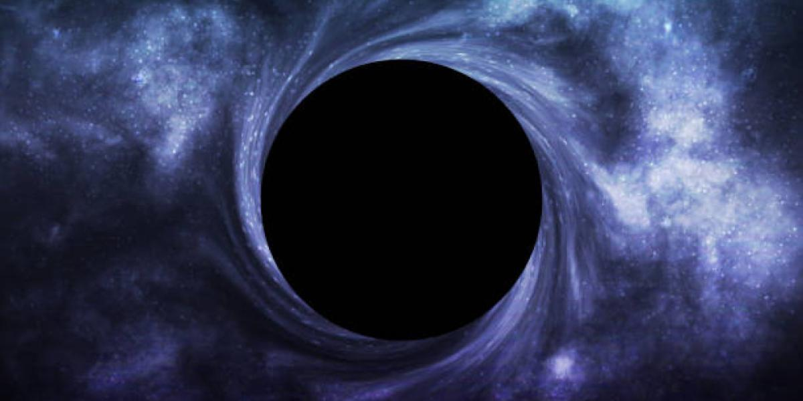

Nombre:"Aujero Negro"
Fecha:"2019"
El aujero negro es una region del espacio con una concentracion de masa tan elevada y una fuerza gravitatoria tan extrema que nada "ni siquiera la luz" puede escapar de su interior. Formacion: surgen comunmente cuando una estrella de gran masa agota su combustible nuclear y colapsa bajo su propio peso al final de su vida. La NASA y el Event Horizon Telescope revelaron la primera imagen directa de un agujero negro en el centro de la galaxia M87.
Nombre:"sonido de un aujero negro"Fecha:"4/5/2022"
en este audio se muestra el supuesto sonificacion de un aujero negro del centro del Cumelo de Parceo, a 240 millones de años luz de la tierra. El sonido fue detectado el 10 de abril de 2022 por el observatorio de Rayos X Chandra de la NASA, pero se publico el 4 de mayo de 2022.
Un aujero negro no brilla, ni refrega luz no se ve y su graveda es tan fuerte que ni siquiera la luz puede escapar de su interior a pesar de que es lo mas rapido que exite.
Nombre:"Aujero Negro"Fecha:"4/5/2022"
en este video se mostrara un documental sobre los agujeros negros desde su concepto, sonido en pocas palabaras informacion oficial que tenemos sobre el agujero negro esto con la finalidad de entender mas de ellos.